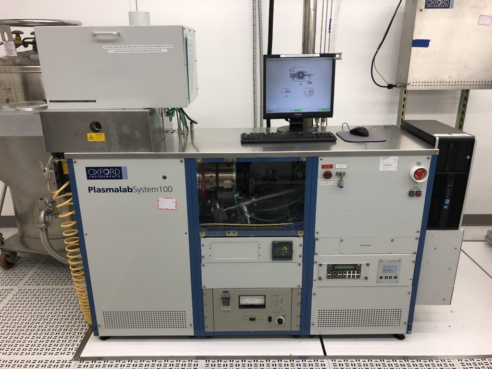
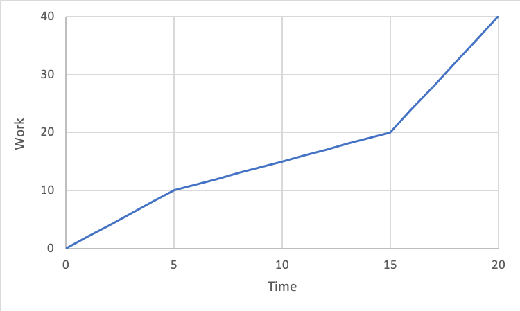

During my last two semesters of my undergraduate career, I was required to write a thesis in lieu of a "senior design project". My topic was "Deep Reactive-Ion Etching Process Development and Mask Selection". The final thesis document can be found here.
The thesis option is preferable to some, including me: I got to choose my own research topic and advisor and there were no sloppy, irresponsible teammates to slowly drag my grade down. But the eight months I spent working on it were quite different—in both good and bad ways—from what I initially anticipated while staring down at the timeline I created for myself in August 2019.
Lesson 1: If something is available and you have to do it eventually, do it as soon as possible
Lesson 2: Plan things out thoroughly. If stuck, stop and develop plan
Lesson 3: Don't offer to do things people don't expect you to do if they won't care
Lesson 4: Get started early and finish early
Lesson 5: Your research probably doesn't matter
Lesson 6: Compatible managers matter
My research revolved primarily around a single tool, but also used a few others to help prepare the samples I was testing. All of these are rather high-end and have many, many moving parts, making it all the more miraculous that they work so consistently.
On more than one occasion, I became exhausted after a long day of working in the cleanroom, as humans do. So instead of choosing to spend one more hour inside doing some final sample preparation before testing, I opted to leave for video games, reading, or almost anything else, thinking that the tool would be fine in the morning. But sometimes it wasn't. Being an open-user facility, tools were in constant use by many others, some of whom were not very responsible or capable. This adds another chaotic variable that can easily mess up the balance of the tool-operating-just-fine equation.
On the few occasions that this happened, my stress levels went through the roof. I told myself the tool would never work, my advisor would be dissatisfied with the extent of my work, and I wouldn't graduate, relinquishing my already-accepted job offer, forcing me to find alternative work that I would most likely hate. (One small note: I am not a traditional electrical engineer. I do not enjoy circuit/digital design, power, or software engineering, the three fields most EEs from my university go into. Instead, I like the unsexy field of devices. This pigeonholes me into a career within an extremely cyclical industry.) After I got the tool working again through both luck and skill, I vowed never to leave until I was finished with sample prep.
As I look back to the beginning of the thesis, I shake my head and bring my palm to my forehead. So much effort was wasted due to lack of planning. So many hours could have been saved had I sat down for an hour to sketch out a detailed roadmap, complete with numbers, dates, and expectations, of the months ahead. Instead, I dove head-first into experiments, not thinking about the bigger picture and how those experiments fit in.
My research focused on process development. The most basic method of process development is getting baseline measurements, changing a single variable while keeping the others constant, and seeing how the measurements change. Using this method across a number of variables and range of values provides a roadmap of how different variable values work together.
| Experiment Number | Measurement 1 | Measurement 2 | Measurement 3 |
|---|---|---|---|
| 1 (baseline) | X | Y | Z |
| 2 | X+1 | Y+2 | Z+5 |
| 3 | X-3 | Y+8 | Z+1 |
In order to create this roadmap, variables and their respective values should be chosen before experiments begin, so they are known and there is no wondering what should be done next (unless multiple experiments are not working as planned, then something needs to be changed - more on that below). I did not follow this logical rule. I chose four variables, which was fine, and a few numbers for each, also fine. What I did not do was take a few minutes to sit back and reflect on exactly why I chose these variables and numbers. Why did I decide to vary RF power between 20, 25, 30, and 35, instead of 10, 20, and 40? Why was SF6 gas flow rate kept constant and O2 gas flow rate varied, instead of both or just SF6?
What happens when you've planned everything out methodically and diligently, only to have the experiments fail? You do the same thing you did in the beginning: sit down, (attempt to) figure out exactly why it failed, and adjust future experiments to avoid or mitigate failure.
A quick, basic Fermi approximation (with conservative estimates) can tell me just how many hours I wasted. Wasted is the correct term to use, as I reset my experiment values deep into the semester and disregarded past results. I also failed to do mass sample prep on a few occasions. The subscripts are the specific areas I messed up on.
\[\begin{align*} t_{\text{etch}} &= \left(30 \, \frac{\text{min}}{\text{experiment}}\right) \times \left(10 \, \text{experiment}\right) + \left(30 \frac{\text{min}}{\text{clean}}\right) \times \left(3 \, \text{clean}\right) = 390 \, \text{min} \\ t_{\text{photo}} &= \left(180 \, \frac{\text{min}}{\text{experiment}}\right) \times \left(2 \, \text{experiment}\right) = 360 \, \text{min} \\ t_{\text{total}} &= t_{\text{etch}} + t_{\text{photo}} \\ &= \text{750 min} \\ &\approx \text{13 hr} \end{align*}\]
Ouch! 13 uncomfortable hours of my life I'll never get back because I didn't sit down to plan things out.My advisor could not care less about my project. He is so involved with his own research and priorities as a professor that a measly undergraduate thesis that has no bearing on his career serves him no benefit to put effort into. This leads to rather low expectations.
During these meetings and a few email exchanges, he asked me questions about the project and I offered to do things to answer those questions, e.g. Q: how is this defined? A: Like this, but I can reach out to X or research Y to verify. This initiative was not expected or overtly appreciated by him and only put more burden on me.
This lesson does not apply when actions are guaranteed to be appreciated by the other. If a friend is moving and doesn't expect help yet I still offer and follow through, that will improve our friendship.
This was already well-known to me, but was reinforced over the course of the project. Some things were out of my control, forcing Parkinson compression (see below).
Parkinson's Law states that "work expands so as to fill the time available for its completion". While the work generally expands (less work per unit time), I propose a two-word addition to the quote to make it: "work expands or compresses so as to fill the time available for its completion". This allows for more work per unit time, hence the term "compress".
First, the expansion part. If you have a lot of work to get done and a lot of time to do it, it is human nature that this work will be spread out over the course of the "lot of time" and not be finished well before the end. Everyone in this program had two full semesters (224 days or 3600 working hours (16 * 224)), and yet some are still finalizing research with days until the end. I experienced Parkinson expansion to a minor degree.
Have you ever realized a homework or deadline is due much sooner than you thought? It could be the same day or next week (but a month earlier than you expected) and you are freaking out. Yet, somehow you are able to finish in time, despite you thinking there's absolutely no way this can get finished. This is the Stock-Sanford corollary (or as I call it, Parkinson compression): "If you wait until the last minute, it only takes a minute to do so." I experienced Parkinson compression to a major degree.
Assuming the equation for work is \(W = E \times t\), where \(W\) is a constant work, \(E\) is effort, and \(t\) is time, both laws hold.
Below are three separate time periods plotted with constant work value of 40 units.
These plots are ideal. A more realistic plot would act as a piecewise function, with periods of all three levels of effort: \[W = \left\{\begin{array}{cc} 2t \quad &0 \leq t \leq 5 \\ t \quad &5 < t \leq 15 \\ 4t \quad &15 < t \leq 20 \\ \end{array}\right.\]
Some suggestions on how to avoid Parkinson's Law:
A bit cynical, I know, but hear me out. Over 72% of papers in engineering aren't cited within five years of their publication. Well, aren't some papers only read and not cited? So the percentage that go unread has to be less than the 72% that are uncited, right? Likely, yes, but not as much as you'd like to think. While number of citations is not the be-all and end-all of quantifying or qualifying usefulness, it is one measure. What does no citations mean? I see three explanations:
Up to now, my research has helped two researchers wanting to perform DRIE on the same tool. While this is exciting, their research will likely have no great impact and therefore "doesn't matter".
This is all assuming a practical, immediate effect. I am not taking into account personal satisfaction, skills learned while performing said research, or tertiary or greater effects (A cites you, B cites A, C cites B and wins the Nobel Prize).
I've had two "real" managers in my lifetime: one during my summer internship at Texas Instruments and the other during my 2.5 year tenure as a student technician in a research lab (the same one I used during this thesis's research). Both were stellar and set an expectation that I am unsure will be met in the future. The three main qualities I found so appealing were their willingness to make sure I was doing okay (project-wise, mentality-wise), taking time out of their day to help me, and valuing my input.
My thesis advisor checked none of those boxes. (I acknowledge it may just be his advising style and the lack of importance of my project.)
I am convinced that this lack of involvement and moral support made the research much more stressful. I felt like I was annoying him if I was having trouble, which left me to brood about my worries alone. My ability to work and solve problems independently was the silver lining, but in the future I will seek out managers who are more compatible with my desired managing style.
Despite the pain, anxiety, monotony, and stress this program brought me, I'm glad I did it. The main thing I learned is that I do not want to go to graduate school. Research is not for me. Maybe it was the nature of the project that turned me off (process development can be boring, especially when it's on a single tool). Maybe it was my advisor. Maybe it was a mix of both, or other factors I'm not considering. Either way, I will be done with formal education in May 2020 and won't be looking back.
I also learned a significant amount about productivity, planning, and organization and how to implement it in my personal and professional life.